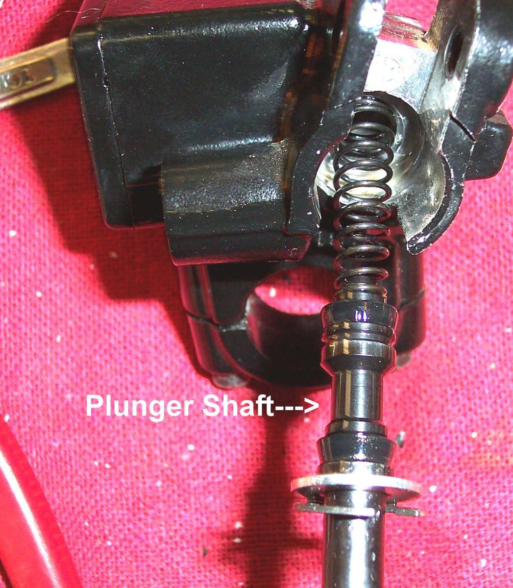

You squeeze the brake and it feels firm at first, but if you keep squeezing (for example waiting at a junction) the lever or pedal slowly moves further until it nearly touches the bar or footpeg. This means fluid is escaping from the high-pressure side: either out of the system (an external leak) or past a worn seal inside the master cylinder or CBS unit (an internal leak). Air alone does not usually do this; air gives a soft lever that stays at one point.
Is it safe to ride?
No. In a long stop the brake can lose most of its pressure. Do not ride until the cause is found.
Quick checks first
- Look at the fluid level in each reservoir.
- Wipe the lever, master cylinder, hoses, banjo bolts and caliper dry, squeeze hard for a minute, and look for fresh wetness.
- Look under the rubber boot behind the lever (or under the rear master cylinder pushrod boot).
- Does it happen with the front lever, the rear pedal or both?
Diagnose it step by step
1Hold the lever firmly for 30 to 60 seconds with the bike still. Does it sink?
- No: it may be a soft lever, not a sinking one. Go to Brake lever or pedal feels spongy.
- Yes: go to step 2.
2After holding, is there fresh fluid at any hose, banjo bolt or bleed nipple?
- Yes: external leak. A banjo usually needs new sealing washers; a damaged hose is replaced. See Check brake hoses and banjo bolts, then bleed with Replace brake fluid and bleed the brakes.
- No: go to step 3.
3Is there fluid round a caliper piston or on the pads?
- Yes: a caliper seal is leaking. Rebuild a brake caliper and replace the pads. Workshop.
- No: go to step 4.
4Is there fluid under the lever boot, or does the fluid in the reservoir swirl or bubble as the lever sinks?
- Yes: the master cylinder cups are worn. Check the brake master cylinder. Workshop.
- No, and no leak anywhere: the master cylinder is still the most likely cause. Go to the same page.
5Is it the rear pedal on a CBS bike (like the K-Light 125)?
- Yes: the CBS unit can leak inside. The workshop does the K-Light internal leak test with the adjusting bolt and pedal held. See Check a combined braking system (CBS).
- No: continue with the master cylinder check.
6ABS bike, with no leak and a good master cylinder?
- Yes: the workshop must test the ABS modulator with the maker's tool. See Diagnose an ABS warning light.
What happens if you ignore it: the seal wear gets worse, and one day the lever reaches the bar in an emergency stop.
Causes, most likely first
| Cause | How to confirm | Fix |
|---|---|---|
| Weeping banjo bolt or hose | Wet after holding pressure | Check brake hoses and banjo bolts |
| Worn master cylinder cups | Sinks with no outside leak; wet under boot | Check the brake master cylinder |
| Leaking caliper seal | Fluid at piston, wet pads | Rebuild a brake caliper |
| CBS unit internal leak | Rear pedal on CBS bike; adjusting bolt turns while pedal held | Check a combined braking system (CBS) |
| ABS modulator internal leak | ABS bike, all else good | Diagnose an ABS warning light |